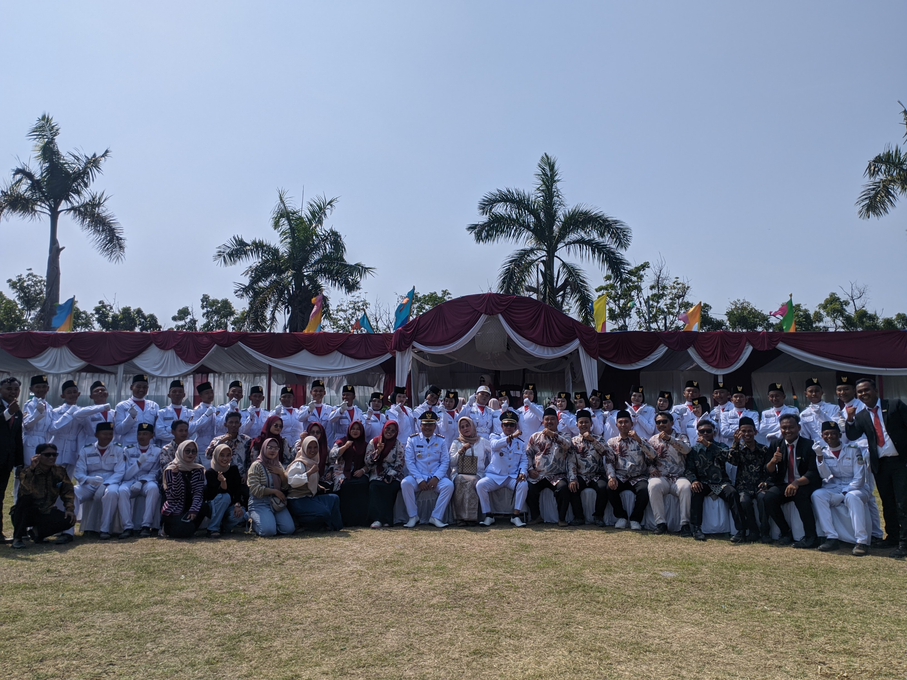
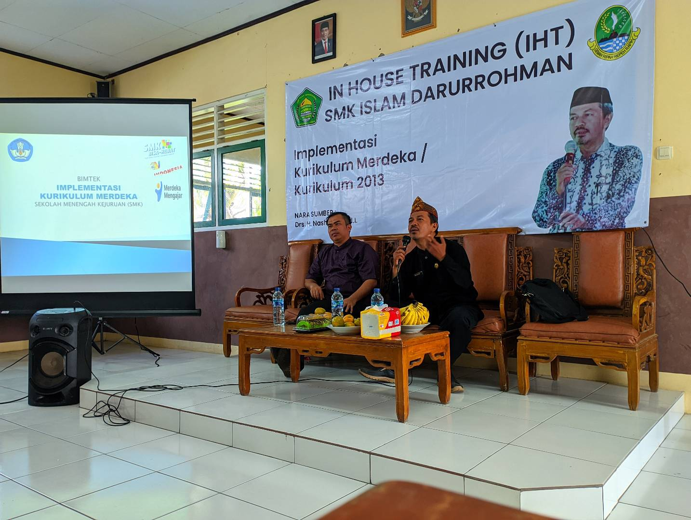

Profil
Nama saya Bayu Saputra, lulusan SMK TKJ tahun 2021 dengan nilai akhir 82. Saya memiliki minat dan keahlian di bidang teknologi informasi dan administrasi pendidikan. Saat ini saya bekerja sebagai staf kurikulum, membantu menyusun dan mengelola jalannya kegiatan pembelajaran di sekolah, termasuk mengatur kegiatan asesmen sumatif. Selain itu, aktif dalam beberapa kegiatan Pelatihan yaitu Digital Entreupeuner Academic, TOT Video Editor yang diselenggarakan oleh BPPTIK Kominfo Cikarang, dan memiliki sertifikasi kompetensi BNSP di bidang Operator Komputer Muda yang diselenggarai oleh BPPTIK Kominfo Cikarang, Balai Besar Pelatihan Vokasi dan Produktifitas Kota Bekasi dan BLK Kompetensi Jawa Barat.
Pendidikan
- Universitas Pelita Bangsa - Teknik Informatika (2023 - Sekarang)
- SMK Islam Darurrohman - Teknik Komputer dan Jaringan (2018-2021)
- SMP Islam Almaliyah - Sukatani (2015-2018)
- SDN Sukamantri 01 (2009-2015)
Keahlian
- Microsoft Office tingkat Ahli
- Leadership
- Work Team
- Administrasi Pendidikan
- Kemampuan Organisasi dan Manajemen Waktu
- Video Editing
Kontak
- Email: bayusaputra1xtkj2@gmail.com
- Telepon: +62 856-9414-6062
- LinkedIn: linkedin.com/in/Bayu Saputra
Pengalaman Kerja
- Staf Kurikulum di SMK Islam Darurrohman (2021 s.d Sekarang)
- Pengembangan Kurikulum: Mengelola proses perencanaan, penyusunan, implementasi, dan evaluasi kurikulum untuk memastikan kualitas pendidikan.
- Administrasi Kurikulum: Mengisi buku kegiatan harian, menyusun agenda ekskul, dan menyiapkan perlengkapan tes semesteran.
- Manajemen Kepegawaian: Mengelola administrasi pegawai, termasuk pengelolaan cuti, penghargaan, dan insentif.
- Pengelolaan Rapat: Mengelola persiapan, pencatatan, dan logistik rapat internal untuk memastikan pertemuan berjalan lancar.
- Pelatihan dan Sertifikasi
- Sertifikat Operator Komputer Muda dari BLK Kompetensi Jawa Barat – dinyatakan kompeten.
- Sertifikat Digital Kewirausahaan dari BPPTIK Kominfo Cikarang – dinyatakan kompeten.
Portofolio
My Galeri


In House Training bersama Bapak Nashori, S. Pd., M. Pd.
implementasi Kurikulum Merdeka di Tahun Ajaran 2024/2025

Pengukuhan Paskibraka tk. Kecamatan
Pengukuhan Paskibraka tk. Kecamatan untuk memperingati Hari Ulang Tahun Republik Indonesia ke 78th